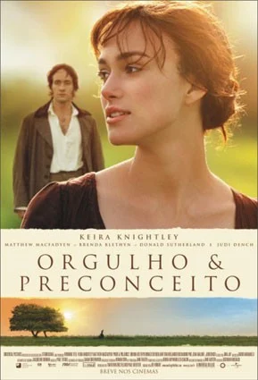

Enredo
A história acontece na virada do século XIX, na Inglaterra rural. A família Bennet, que consiste nos Sr. e Sra. Bennet e suas cinco filhas - Jane, Elizabeth (Lizzy), Mary, Catherine (Kitty) e Lydia - vivem em relativa independência financeira em sua fazenda, Longbourn. Como Longbourn está destinada a ser herdada pelo primo do Sr. Bennet, Sr. Collins, a Sra. Bennet está ansiosa para que suas cinco filhas se casem antes da morte do Sr. Bennet. No entanto, Elizabeth, a personagem principal, está decidida a não se casar, a menos que seja compelida por um amor verdadeiro.
Sr. Bingley, um solteiro rico que mudou-se recentemente para Netherfield, uma grande casa nas redondezas, é introduzido à sociedade local em um baile, juntamente com sua irmã Caroline e seu reservado amigo Sr. Darcy, que "possui metade de Derbyshire". Bingley se encanta com a bela e gentil Jane, enquanto Elizabeth passa a ter antipatia por Darcy, depois que ele recusa friamente suas tentativas de conversa e acaba ouvindo-o dizer a Bingley que "ela não é bonita o suficiente". Quando Jane fica doente durante uma visita a Netherfield, Elizabeth vai visitá-la, e encontra o seu orgulhoso Sr. Darcy.
Mais tarde os Bennet são visitados pelo Sr. Collins, um pomposo ministro que não fala de nada além de sua patrona, Lady Catherine de Bourgh. Entretanto, o belo e charmoso tenente Wickham, da recém-chegada milícia, captura a atenção das garotas; ele critica Darcy, dizendo a Elizabeth que ele o enganou com relação à sua herança. Em um baile em Netherfield, Elizabeth, surpresa por sua rápida aparição e pedido, aceita dançar com Darcy, mas diz para sua melhor amiga Charlotte Lucas que havia "jurado detestá-lo por toda a eternidade". Durante a dança, ela o trata com sarcasmo e ele responde na mesma medida. Eles se concentram tão completamente um no outro que os outros convidados "desaparecem" até o fim da música.No dia seguinte, em Longbourne, Sr. Collins pede Elizabeth em casamento, mas ela não aceita. Isso causa uma crise nervosa em sua mãe, mas ela tem o apoio de seu pai. Quando Bingley retorna inesperadamente a Londres, Elizabeth manda que Jane vá até a casa dos seus tios, também em Londres, para não perder contato com ele. Depois disso, Charlotte conta a Elizabeth que vai se casar com o Sr. Collins, por que ele pode oferecê-la uma situação financeira estável.Meses mais tarde, Elizabeth visita os Collin em Rosings, proprieade da arrogante Lady Catherine; eles são convidados para jantar na mansão, onde encontram Darcy e o coronel Fitzwilliam, sobrinhos de Lady Catherine. Nesse encontro, Darcy demonstra um maior interesse em Elizabeth, especialmente quando ela replica as perguntas de Lady Catherine sobre sua família de forma espirituosa. No dia seguinte, o coronel Fitzwilliam acaba contando para Elizabeth que Darcy havia separado o Sr. Bingley de um moça cuja família não tinha sido considerada apropriada, que ela sabia ser Jane. Aflita, ela corre sob a chuva; Darcy escolhe esse momento para a seguir e pedir em casamento, dizendo que a ama "ardentemente", apesar de sua "posição inferior". Elizabeth recusa, citando o seu tratamento com Jane e Bingley, e Wickham, e eles discutem. Ele a procura mais tarde, apenas para entregar uma carta, que explica suas atitudes. Na carta, ele revela que julgou mal a afeição de Jane por Bingley, e expõe Wickham como um jogador que gastou toda a herança que o pai de Darcy, que o considerava como um filho, deixou para ele e a quem negou mais dinheiro; ele também cortejou a irmã de Darcy, Georgiana - na época com 15 anos, na tentativa de obter sua herança de 30 mil libras.Elizabeth não conta nada a Jane. Em vez disso, os Gardiners levam Elizabeth para uma viagem a Peak District, e eles visitam a casa de Darcy, em Pemberley. Elizabeth fica atordoada com sua riqueza, e só ouve coisas boas dele de sua governanta. Acidentalmente, ela encontra com Darcy - que ela achava que não estava em casa - e ele a convida para conhecer sua irmã. Georgiana e Elizabeth gostam uma da outra instantaneamente. Mais tarde, Elizabeth descobre que sua irmã mais nova, Lydia, tinha fugido com Wickham, ela chora e conta a notícia para seus tios e para Darcy, antes de voltar para casa. A família acredita que chegará a ruína por ter uma filha "desgraçada", mas logo ficam aliviados por saber que o Sr. Gardiner tinha encontrado os dois em Londres, e que iam se casar. Mais tarde, Lydia conta acidentalmente a Elizabeth que Darcy que os havia encontrado e tinha arcado com seu dote.Elizabeth não conta nada a Jane. Em vez disso, os Gardiners levam Elizabeth para uma viagem a Peak District, e eles visitam a casa de Darcy, em Pemberley. Elizabeth fica atordoada com sua riqueza, e só ouve coisas boas dele de sua governanta. Acidentalmente, ela encontra com Darcy - que ela achava que não estava em casa - e ele a convida para conhecer sua irmã. Georgiana e Elizabeth gostam uma da outra instantaneamente. Mais tarde, Elizabeth descobre que sua irmã mais nova, Lydia, tinha fugido com Wickham, ela chora e conta a notícia para seus tios e para Darcy, antes de voltar para casa. A família acredita que chegará a ruína por ter uma filha "desgraçada", mas logo ficam aliviados por saber que o Sr. Gardiner tinha encontrado os dois em Londres, e que iam se casar. Mais tarde, Lydia conta acidentalmente a Elizabeth que Darcy que os havia encontrado e tinha arcado com seu dote.

Imagem da capa do livro Orgulho e preconceito com Sr. Darci e Elizabeth
Recepção (Crítica)
O filme foi a segunda versão cinematográfica fiel do livro depois da "famosa, mas estranhamente falha, adaptação em preto e branco de 1940, que estrela Greer Garson e Laurence Olivier", e até 2005, The Times considerou a versão de 1995, feita para televisão, "tão dominante, tão universalmente adorada, [que] se prolongou consciência do público como um padrão cinematográfico". Comparando as seis maiores adaptações de Orgulho e Preconceito, em 2005, o Daily Mirror deu 9/10 para a série de 1995 e o filme de 2005, deixando as outras adaptações com seis ou menos pontos. Baseado em 162 críticas recolhidas pelo Rotten Tomatoes, o filme recebeu uma classificação global de aprovação de 85%, com uma média ponderada de 7.7/10. Segundo o site, o consenso entre os críticos é que o filme "é mais uma adaptação para o cinema do romance de Jane Austen, mas as performances afinadas e sensibilidade moderna na produção tornam essa peça de período familiar nova e agradável". Por comparação, o Metacritic, que atribui uma avaliação normalizada em 100 a partir de comentários críticos, calculou uma pontuação média de 82, através de 36 de opiniões recolhidas, classificando o filme como "aprovação universal".Alguns críticos notaram que a duração do filme de 2005 é um obstáculo para se capturar a profundidade e complexidade da série de televisão de 1995, e chamaram o filme de "obviamente [não tão] ousado ou revisionista" como a série de TV. Joan Klingel Ray, presidente do Jane Austen Society of North America, afirmou que a jovialidade de Knightley e Macfadyen, dizendo que Jennifer Ehle tinha sido "um pouco 'grande' demais para o papel", enquanto Peter Bradshaw, do The Guardian, elogiou Keira Knightley por ter uma notável performance como Lizzy Bennet "que elevou todo o filme", considerando que o elenco de 2005 é "de forma argumentável, um pouco mais inexperiente que Firth e Ehle". Ele adicionou que "Apenas um esnobe, um grosseiro, ou alguém com necrofílica fidelidade à versão de 1995 da BBC com Colin Firth e Jennifer Ehle poderia deixar de desfrutar sua performance". Os críticos ficaram divididos com relação à interpretação de Matthew Macfadyen de Darcy, expressando agradável surpresa, não gostando da sua falta de mudança gradual de emoção, como no livro, e elogiando sua retratação da combinação de insegurança e sensibilidade do personagem, comentando que foi melhor que a de Firth. Garth Pearce, The Sunday Times, não observou nenhum impacto significante no Darcy de Macfadyen, notando em 2007 que "Colin Firth sempre será lembrado como o perfeito Sr. Darcy".